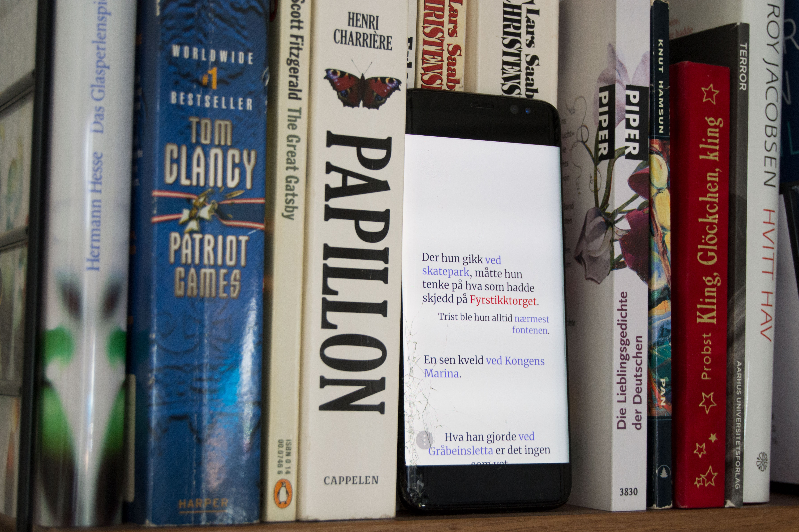
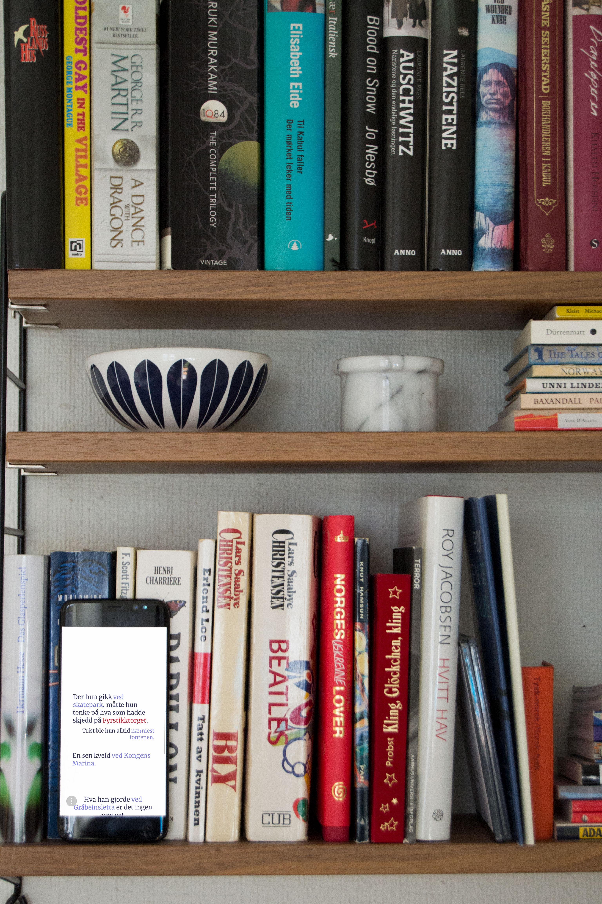

Whenever someone is using one of the Oslo City Bike stations, Citytalks creates stories based on the name and description of that specific station. These stories are displayed in a feed. They don’t necessary tell you anything, but may reflect activities taking place in the city.
 